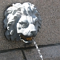

Il ennyie bein à tchi attend, et acouo pus à tchi rein n'prend! Et, ma fé, j'avons attendu quâsiment chent-chînquante ans pouor vaie les jets dg'ieau promîns quand l'obélisque à la mémouaithe dé Pièrre L'Sueux fut êrigi dans la Grand' Rue.
Quand l'Connêtabl'ye dé St. Hélyi mouothit en mil huit chent chînquante trais, y'en avait un tas d'èrconnaîssants tchi voulaient un monument. Viyant qué ch'fut l'înlâssabl'ye Connêtabl'ye tch'avait întroduit la bouonne ieau à la Ville, nou proposit un jet dg'ieau. Mais i' n'y'avait pon assez d'sou pouor chenna, et à eune rêunnion du conmité au mais d'Avri mil huit chent chînquante quat', i' fut décidé d'bâti un obélisque dans la Grand' Rue en espéthant pouver connecter l'ieau pus tard. Lé Sieur Thomas Gallichan proposit des plians tchi fûtent acceptés au mais d'Juilet et l'travas c'menchit en mil huit chent chînquante chînq.

Au mais d'Mai mil huit chent chînquante six, les têtes dé lion destinnées à dêgouôsillonner l'ieau fûtent pliaichies et l'monument 'tait quâsiment prêt – mais les sou mantchaient acouo et les lions avaient la bouoche secque pouor acouo quatorze ans. En mil huit chent septante, la Compangnie dg'Ieau mînt des tchuyaux pouor m'ner à la fîn dé l'ieau ès lions. Mais tout chenna n'duthit pas longtemps et les gens 'taient bétôt à lus r'pliaindre dans les gâzettes qu'l'èrtèrgément des plians pouor un bieau jet dg'ieau au mitan d'la Ville 'tait încriyabl'ye.
D'pis bein longtemps, l'ieau a 'té gâtée dans la p'tite maîson d'à côté, mais lé projet d'nos rafraîchi atout dé l'ieau a 'té gatté. Mais la fîn du temps f'tha tout vaie, et auprès un siècl'ye et d'mie dé sicrèche, l'obélisque est arrouôsé!
Geraint Jennings
2005
Viyiz étout: